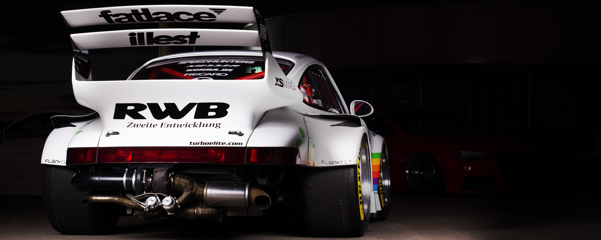

Konrad Rudziński
Fotografia
Strona główna
Galeria
Oferta
Kontakt
Inne
To ja a w tle jadą samochody, obok można posłuchać Beethovena
Your browser does not support the video tag.
Your browser does not support the video tag.